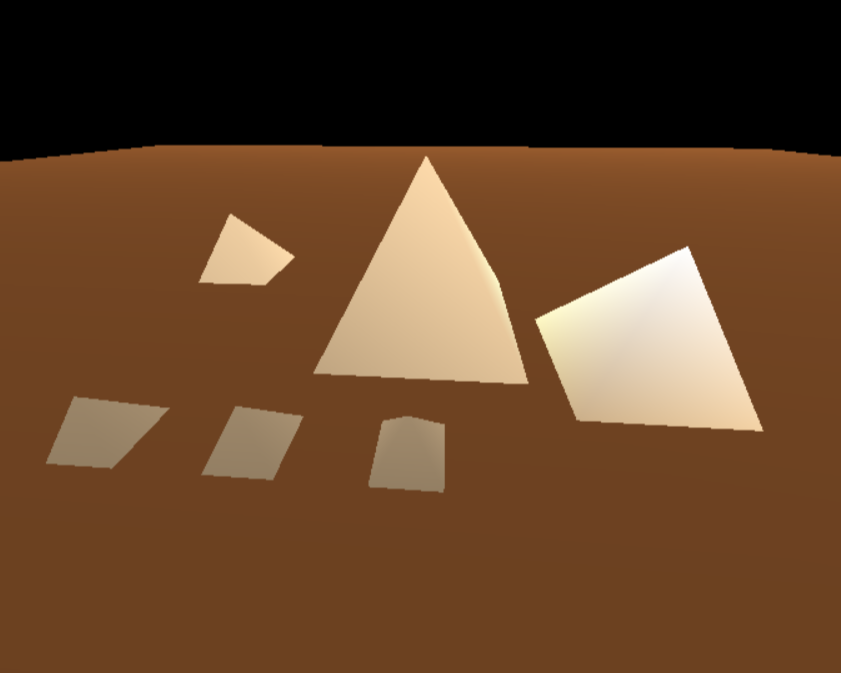
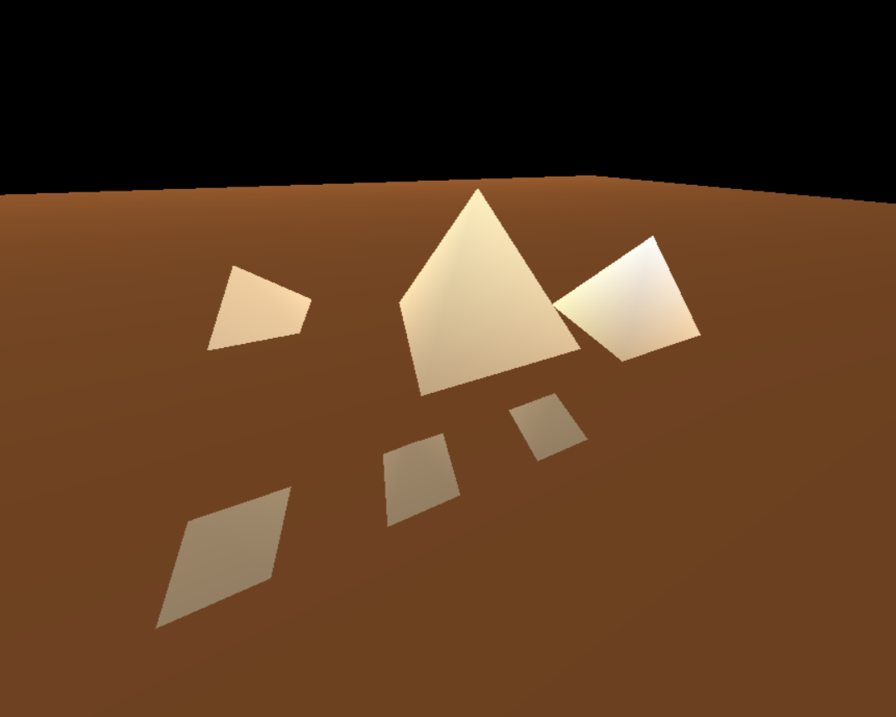
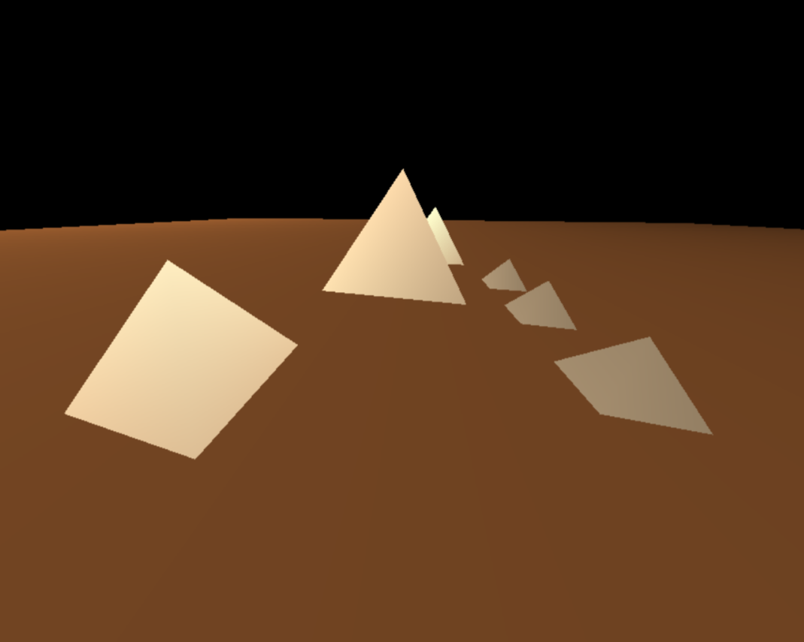

Part of the Graphics Log series:
- Intro into Computer Graphics
- Animated Clock using 2D Graphics
- Creating an Animated Barber Pole with OpenGL
- Lighting in Computer Graphics : A Practical Guide with OpenGLThis post!
- Computer Graphics: Top Learning Resources for beginners
Introduction
Computer graphics play a crucial role in creating realistic and visually appealing scenes in various applications, from video games to simulations. One fundamental aspect of realistic graphics is lighting, which simulates the way light interacts with surfaces to create shadows, highlights, and depth. In this blog post, we will explore the basics of lighting in computer graphics and implement it using OpenGL on a set of pyramids.
The Basics of Lighting
Ambient Lighting
Ambient lighting represents the overall illumination in a scene. It provides a base level of light that evenly illuminates all surfaces. Think of it as the background lighting that prevents complete darkness.
Diffuse Lighting
Diffuse lighting simulates the way light scatters and reflects off surfaces. It is responsible for creating the basic color of an object. Surfaces facing the light source appear brighter, while those facing away are darker.
Specular Lighting
Specular lighting adds highlights to a surface, simulating the reflection of a light source. It creates shiny spots on objects, enhancing their appearance. Specular lighting is crucial for simulating materials like metal or glass.

Implementing Lighting in OpenGL
Now, let’s delve into the practical implementation of lighting in OpenGL using a set of pyramids.
The Foundation: Drawing Pyramids
Let’s start with the building blocks - pyramids. The drawPyramid function sets the stage by rendering a pyramid with a specified height and base. These parameters allow for versatility in creating pyramids of varying sizes.
c++ 1void drawPyramid(float height, float base) {
2 glPushMatrix();
3
4 glBegin(GL_POLYGON);
5 glVertex3f(0, height, 0);
6 glVertex3f(base / 2, 0, -base / 2);
7 glVertex3f(base / 2, 0, base / 2);
8 glVertex3f(-base / 2, 0, base / 2);
9 glVertex3f(-base / 2, 0, -base / 2);
10 glVertex3f(base / 2, 0, -base / 2);
11
12 glEnd();
13 glPopMatrix();
14}Setting Up Illumination
To bring our pyramids to life, we delve into the setLighting function. Here, we configure the lighting environment, enable specific lights, and define properties like ambient, diffuse, and specular lighting. Take note of the positioning of light sources.
c++ 1void setLighting() {
2
3 //enabling lighting
4 glLightModeli(GL_LIGHT_MODEL_LOCAL_VIEWER, GL_TRUE);
5 glEnable(GL_LIGHTING);
6 glEnable(GL_LIGHT0);
7 glEnable(GL_LIGHT1);
8
9 // Set lighting intensity and color
10 GLfloat qaAmbientLight[] = { 0.2, 0.2, 0.2, 1.0 };
11 GLfloat qaDiffuseLight[] = { 0.8, 0.8, 0.8, 1.0 };
12 GLfloat qaSpecularLight[] = { 1.0, 1.0, 1.0, 1.0 };
13
14 //All 3 componenets set for LIGHT_0
15 glLightfv(GL_LIGHT0, GL_AMBIENT, qaAmbientLight);
16 glLightfv(GL_LIGHT0, GL_DIFFUSE, qaDiffuseLight);
17 glLightfv(GL_LIGHT0, GL_SPECULAR, qaSpecularLight);
18
19 //Only the ambient componenet set for LIGHT_1
20 glLightfv(GL_LIGHT1, GL_AMBIENT, qaAmbientLight);
21
22 // Set the light position
23 GLfloat qaLightPosition0[] = { 0.0, 1.0, -.5, 1.0 };
24 glLightfv(GL_LIGHT0, GL_POSITION, qaLightPosition0);
25
26 GLfloat qaLightPosition1[] = {3, 1.0, 2,0.6 };
27 glLightfv(GL_LIGHT0, GL_POSITION, qaLightPosition1);
28}Adding Material Properties
We also infuse material properties to the pyramid. Colors, shininess, and shading models come into play, creating a realistic appearance.
c++ 1
2void drawPyramidWithLighting(float height,float base) {
3
4 GLfloat qaWhite[] = { 1.0, 1.0, 1.0, 1.0 };
5 GLfloat pyramidBody[] = { 0.9607, 0.827, 0.647,1.0};
6
7 glPushMatrix();
8
9 glShadeModel(GL_SMOOTH);
10 glMaterialfv(GL_FRONT, GL_AMBIENT, pyramidBody);
11 glMaterialfv(GL_FRONT, GL_DIFFUSE, pyramidBody);
12 glMaterialfv(GL_FRONT, GL_SPECULAR, qaWhite);
13 glMaterialf(GL_FRONT, GL_SHININESS, 50.0);
14
15 drawPyramid(height,base);
16 glPopMatrix();
17}Crafting the Scene: Drawing Ground and Multiple Pyramids
To complete our illuminated landscape, we introduce the drawGround function, which draws a flat base. The drawPyramids function orchestrates the positioning of multiple pyramids, showcasing the flexibility of our lighting setup.
c++ 1void drawGround() {
2 GLfloat ground[] = { 0.5, 0.3, 0.15, 1.0 };
3 GLfloat qaWhite[] = { 1.0, 1.0, 1.0, 1.0 };
4 glPushMatrix();
5
6 glShadeModel(GL_SMOOTH);
7 glMaterialfv(GL_FRONT_AND_BACK, GL_AMBIENT, ground);
8 glMaterialfv(GL_FRONT_AND_BACK, GL_DIFFUSE, ground);
9 glMaterialfv(GL_FRONT_AND_BACK, GL_SPECULAR, qaWhite);
10 glMaterialf(GL_FRONT_AND_BACK, GL_SHININESS, 128.0);
11 glBegin(GL_POLYGON);
12 glVertex3f(-40, 0, -40);
13 glVertex3f(40, 0, -40);
14 glVertex3f(40, 0, 40);
15 glVertex3f(-40, 0, 40);
16 glEnd();
17 glPopMatrix();
18}
19
20void drawPyramids() {
21 float height = 3, base = 3.5;
22 drawPyramidWithLighting(height, base);
23 glPushMatrix();
24 glTranslatef(3.5 * 1, 0, 4.6 * 0.25);
25 drawPyramidWithLighting(height * 0.7, base * 0.7);
26 glPopMatrix();
27
28 glPushMatrix();
29 glTranslatef(-5, 0, -2);
30 drawPyramidWithLighting(height * 0.5, base * 0.5);
31 glPopMatrix();
32
33 glPushMatrix();
34 glTranslatef(0, 0, 3);
35 drawPyramidWithLighting(height * 0.25, base * 0.25);
36 glTranslatef(-2, 0, 0);
37 drawPyramidWithLighting(height * 0.25, base * 0.25);
38 glTranslatef(-2, 0, 0);
39 drawPyramidWithLighting(height * 0.25, base * 0.25);
40 glPopMatrix();
41
42}Output
  